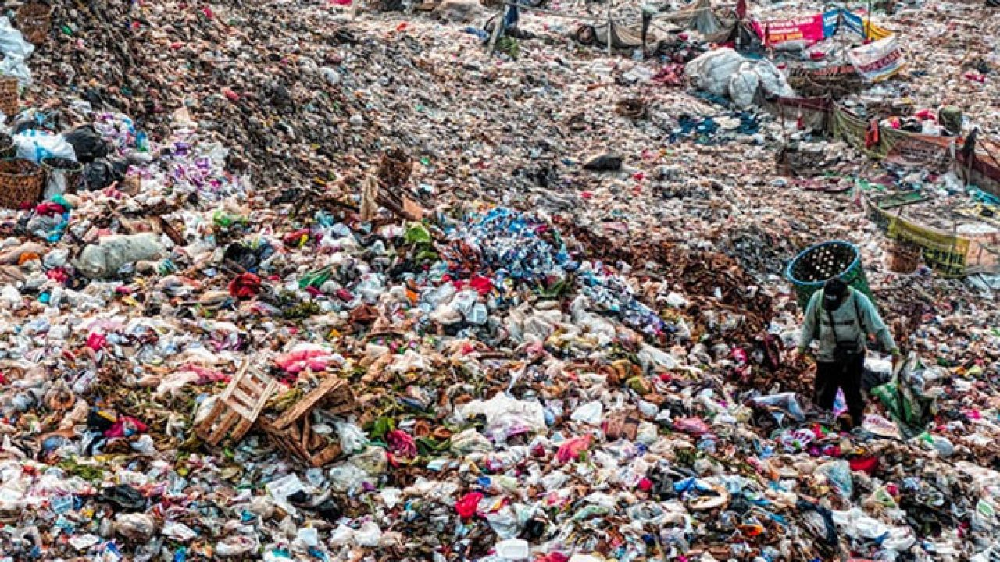

<link rel="stylesheet" href="estilo.css">
<header class="header">
    <div class="menu container">
      <label for="menu">
        
      </label>
      <nav class="navbar">
        <ul>
          <li><a href="#Introduccion" class="selected">Introducción</a></li>
          <li><a href="#Contaminacion">Contaminación</a>
            
          </li>
          <li><a href="#Tipos de contaminacion">Tipos de contaminación</a>
            <ul>
              <li><a href="CTMNC.Agua.html">Agua</a></li>
              <li><a href="CTMNC.Aire.html">Aire</a></li>
              <li><a href="CTMNC.Suelo.html">Pagina principal</a></li>
              <li><a href="Economia circular.html">Economía circular</a></li>
              <li><a href="Gestion.html">Gestión de Residuos</a></li>
              <li><a href="RSDS.biomedicos.html">Residuos biomedicos</a></li>
              <li><a href="RSDS.electronicos.html">Residuos electrónicos</a></li>
            </ul></li>
        </ul>
      </nav>
    </div>
    <h1>Contaminacion del Suelo</h1>
<p>
    La contaminación del suelo es un problema ambiental que implica la acumulación de sustancias tóxicas en la tierra, afectando la calidad del suelo
     y, en consecuencia, la vida vegetal, animal y humana. Los contaminantes pueden provenir de fuentes humanas y naturales, pero la mayoría es resultado
      de actividades industriales, agrícolas y urbanas.
</p>
Principales causas de la contaminación del suelo
<p>
1. Productos químicos agrícolas: Los pesticidas, herbicidas y fertilizantes son ampliamente usados en la agricultura para proteger y nutrir los cultivos. Sin embargo, su uso excesivo o inadecuado introduce sustancias tóxicas al suelo, alterando su composición y calidad.
</p>
2. Residuos industriales: Las fábricas y plantas industriales generan desechos que contienen metales pesados, aceites y químicos peligrosos que, si no son gestionados adecuadamente, contaminan el suelo.
<p>
3. Basura y desechos sólidos: El mal manejo de los residuos urbanos, como plásticos, pilas y electrodomésticos, libera contaminantes al suelo, que permanecen durante años y pueden filtrarse en el agua subterránea.
</p>
4. Derrames de petróleo: Los derrames de hidrocarburos afectan tanto el agua como el suelo, dañando el terreno y las plantas que allí crecen.
<p>
5. Actividades mineras: La minería expone minerales y sustancias tóxicas que terminan en el suelo y afectan su fertilidad y estructura.
</p>
Efectos de la contaminación del suelo
<p>
Reducción de la fertilidad del suelo: La acumulación de químicos y desechos tóxicos afecta las propiedades del suelo, haciéndolo menos fértil y reduciendo su capacidad para sustentar cultivos.

Impacto en la salud humana: Los contaminantes en el suelo pueden ingresar a la cadena alimentaria a través de las plantas que absorben sustancias tóxicas, lo que aumenta el riesgo de enfermedades cuando son consumidas por humanos.

Daños a los ecosistemas: La flora y fauna del suelo son afectadas por la toxicidad de los contaminantes, alterando los ecosistemas y la biodiversidad del lugar.

Contaminación de las aguas subterráneas: Los contaminantes del suelo pueden filtrarse hacia las capas freáticas y acuíferos, afectando el suministro de agua potable y su calidad.
</p>

Soluciones y medidas de prevención
<p>
1. Manejo sostenible de los suelos: Implementar prácticas agrícolas sostenibles, como el uso controlado de fertilizantes y pesticidas, y optar por métodos naturales para el control de plagas.
</p>

2. Tratamiento adecuado de residuos: Es esencial gestionar correctamente los residuos industriales y urbanos para evitar que lleguen al suelo. Esto incluye el reciclaje y el tratamiento de desechos peligrosos.
<p>

3. Reforestación y restauración del suelo: Plantar árboles y vegetación ayuda a recuperar suelos degradados, ya que las raíces contribuyen a estabilizar la tierra y mejorar su calidad.
</p>

4. Regulación y control: Las leyes ambientales deben regular el uso de sustancias peligrosas y el manejo de residuos para reducir la contaminación del suelo.



</p>